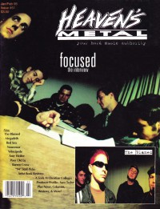

CMnexus
:
Contemporary Christian culture, music, and media.
Magazines
Profiles
Dove Awards
cmnexus.org
CM
nexus
→
Profiles
→
F
Focused
On the cover

January 1995
Heaven's Metal
Media coverage:
May 1994 in
Heaven's Metal
"Only Bowing To One", by
David A. Jenison
Sep 1994 in
Heaven's Metal
"Hardcore", by
David A. Jenison
Jan 1995 in
Heaven's Metal
"Focused: The Interview", by
Brent Hershey
Jul 1996 in
HM
"Hardnews: From Focused To Flowers..."
Jan 2001 in
HM
"Concert Review: Focused Reunion", by
Andi Hamamoto
Albums & reviews:
1993
:
Bow
Mar 1994 in
Heaven's Metal
, by
Doug Van Pelt
1994 in
Cornerstone
, by
Jason Burt
Jul 2005 in
HM
, by
Ryan Clark
1995
:
The Hope that Lies Within
Jul 1995 in
Heaven's Metal
, by
Doug Van Pelt
1999
:
The Wheels of Progress (1992 - 1996)
Award Summary
(
Nominations
/
Wins
)
Dove Awards
1996 Dove Awards
Hard Music Album
:
The Hope that Lies Within
Books about Focused
"
Focused
" in
The Encyclopedia of Contemporary Christian Music
(
Mark Allan Powell
,
2002
)
CMnexus
(noun)
The magazine index
of modern music
and Christianity
© 2011 CMnexus. Last updated April 2021.
Contact:
Rants and other correspondence to:
editor -AT- cmnexus
-DØT- org
About